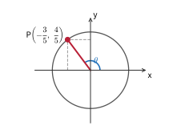
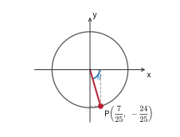
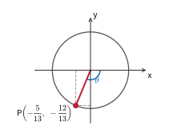

別冊練習問題 3 の解答 2倍角・半角の公式
(1) \(0<\theta<2\pi\) で \(\cos\theta=- \dfrac{3}{5}\)、\(\theta\) は第2象限の角である。\(\sin2\theta\)、\(\cos2\theta\)、\(\sin\dfrac\theta2\)、\(\cos\dfrac\theta2\) の値を求めよ。
\(\sin\theta\) を求める
\(\theta\) は第2象限（\(0<\theta<\pi\)）。
\[\sin\theta=\sqrt{1-\left(- \dfrac{3}{5}\right)^2}=\dfrac{4}{5}\]
2倍角の公式
\[\sin2\theta=2\sin\theta\cos\theta=2\left(\dfrac{4}{5}\right)\left(- \dfrac{3}{5}\right)=- \dfrac{24}{25}\]\[\cos2\theta=2\cos^2\theta-1=2\left(- \dfrac{3}{5}\right)^2-1=- \dfrac{7}{25}\]半角の公式で \(\sin\dfrac\theta2\)
\(\sin^2\dfrac\theta2=\dfrac{1-\cos\theta}{2}\)。\(\dfrac\theta2\) の範囲は \(0<\dfrac\theta2<\pi\) なので \(\sin\dfrac\theta2>0\)。
\[\sin^2\dfrac\theta2=\dfrac{1-\left(- \dfrac{3}{5}\right)}2=\dfrac{4}{5}\ \Rightarrow\ \sin\dfrac\theta2=\dfrac{2 \sqrt{5}}{5}\]\(\cos\dfrac\theta2\)
\(\cos^2\dfrac\theta2=\dfrac{1+\cos\theta}{2}\)。\(\dfrac\theta2\) は第1象限（\(0<\dfrac\theta2<\dfrac\pi2\)）なので正。
\[\cos\dfrac\theta2=\dfrac{\sqrt{5}}{5}\]【答案】
\[\sin2\theta=- \dfrac{24}{25},\ \cos2\theta=- \dfrac{7}{25},\ \sin\dfrac\theta2=\dfrac{2 \sqrt{5}}{5},\ \cos\dfrac\theta2=\dfrac{\sqrt{5}}{5}\]答
(2) \(0<\theta<2\pi\) で \(\cos\theta=\dfrac{7}{25}\)、\(\theta\) は第4象限の角である。\(\sin2\theta\)、\(\cos2\theta\)、\(\sin\dfrac\theta2\)、\(\cos\dfrac\theta2\) の値を求めよ。
\(\sin\theta\) を求める
\(\theta\) は第4象限（\(\pi<\theta<2\pi\)）。
\[\sin\theta=-\sqrt{1-\left(\dfrac{7}{25}\right)^2}=- \dfrac{24}{25}\]
2倍角の公式
\[\sin2\theta=2\sin\theta\cos\theta=2\left(- \dfrac{24}{25}\right)\left(\dfrac{7}{25}\right)=- \dfrac{336}{625}\]\[\cos2\theta=2\cos^2\theta-1=2\left(\dfrac{7}{25}\right)^2-1=- \dfrac{527}{625}\]半角の公式で \(\sin\dfrac\theta2\)
\(\sin^2\dfrac\theta2=\dfrac{1-\cos\theta}{2}\)。\(\dfrac\theta2\) の範囲は \(0<\dfrac\theta2<\pi\) なので \(\sin\dfrac\theta2>0\)。
\[\sin^2\dfrac\theta2=\dfrac{1-\left(\dfrac{7}{25}\right)}2=\dfrac{9}{25}\ \Rightarrow\ \sin\dfrac\theta2=\dfrac{3}{5}\]\(\cos\dfrac\theta2\)
\(\cos^2\dfrac\theta2=\dfrac{1+\cos\theta}{2}\)。\(\dfrac\theta2\) は第2象限（\(\dfrac\pi2<\dfrac\theta2<\pi\)）なので負。
\[\cos\dfrac\theta2=- \dfrac{4}{5}\]【答案】
\[\sin2\theta=- \dfrac{336}{625},\ \cos2\theta=- \dfrac{527}{625},\ \sin\dfrac\theta2=\dfrac{3}{5},\ \cos\dfrac\theta2=- \dfrac{4}{5}\]答
(3) \(0<\theta<2\pi\) で \(\cos\theta=- \dfrac{5}{13}\)、\(\theta\) は第3象限の角である。\(\sin2\theta\)、\(\cos2\theta\)、\(\sin\dfrac\theta2\)、\(\cos\dfrac\theta2\) の値を求めよ。
\(\sin\theta\) を求める
\(\theta\) は第3象限（\(\pi<\theta<2\pi\)）。
\[\sin\theta=-\sqrt{1-\left(- \dfrac{5}{13}\right)^2}=- \dfrac{12}{13}\]
2倍角の公式
\[\sin2\theta=2\sin\theta\cos\theta=2\left(- \dfrac{12}{13}\right)\left(- \dfrac{5}{13}\right)=\dfrac{120}{169}\]\[\cos2\theta=2\cos^2\theta-1=2\left(- \dfrac{5}{13}\right)^2-1=- \dfrac{119}{169}\]半角の公式で \(\sin\dfrac\theta2\)
\(\sin^2\dfrac\theta2=\dfrac{1-\cos\theta}{2}\)。\(\dfrac\theta2\) の範囲は \(0<\dfrac\theta2<\pi\) なので \(\sin\dfrac\theta2>0\)。
\[\sin^2\dfrac\theta2=\dfrac{1-\left(- \dfrac{5}{13}\right)}2=\dfrac{9}{13}\ \Rightarrow\ \sin\dfrac\theta2=\dfrac{3 \sqrt{13}}{13}\]\(\cos\dfrac\theta2\)
\(\cos^2\dfrac\theta2=\dfrac{1+\cos\theta}{2}\)。\(\dfrac\theta2\) は第2象限（\(\dfrac\pi2<\dfrac\theta2<\pi\)）なので負。
\[\cos\dfrac\theta2=- \dfrac{2 \sqrt{13}}{13}\]【答案】
\[\sin2\theta=\dfrac{120}{169},\ \cos2\theta=- \dfrac{119}{169},\ \sin\dfrac\theta2=\dfrac{3 \sqrt{13}}{13},\ \cos\dfrac\theta2=- \dfrac{2 \sqrt{13}}{13}\]答